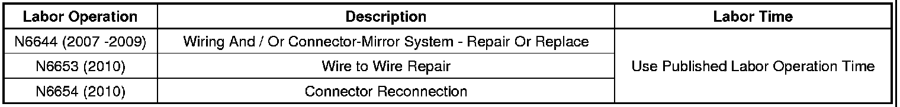

Body - L/H/R/H Power Mirror(s) Inoperative
TECHNICALBulletin No.: 08-08-45-002A
Date: May 13, 2010
Subject: Left Or Right Power Outside Mirror Inoperative (Inspect Wire Harness)
Models:
2007-2010 Cadillac Escalade, Escalade ESV, Escalade EXT
2007-2010 Chevrolet Avalanche, Silverado, Suburban, Tahoe
2007-2010 GMC Sierra, Sierra Denali, Yukon, Yukon Denali, Yukon XL, Yukon Denali XL
Supercede:
This bulletin is being revised to add the 2010 model year and update the Warranty Information. Please discard Corporate Bulletin Number 08-08-45-002 (Section 08 - Body and Accessories).
Condition
Some customers may comment that the left or right outside power mirror is inoperative.
Cause
This condition may be caused by two different concerns.
1. The wiring harness may be damaged from a screw that retains the door trim to the door.
2. The wiring harness connector at the mirror glass actuator may not be locked in place.
Correction
Inspect the wiring harness and connector.
1. Remove the door trim and inspect the wiring harness. Refer to Front Side Door Trim Panel Replacement in SI if necessary. If the harness is damaged , refer to Repairing Damaged Wire Insulation in SI. After making the repair, reposition the harness.
2. Inspect the connector at the mirror actuator. Refer to Outside Rearview Mirror Motor Replacement in SI if necessary. If the connector is loose, remove and reinstall the connector.
Warranty Information

For vehicles repaired under warranty, use the table above.

Disclaimer